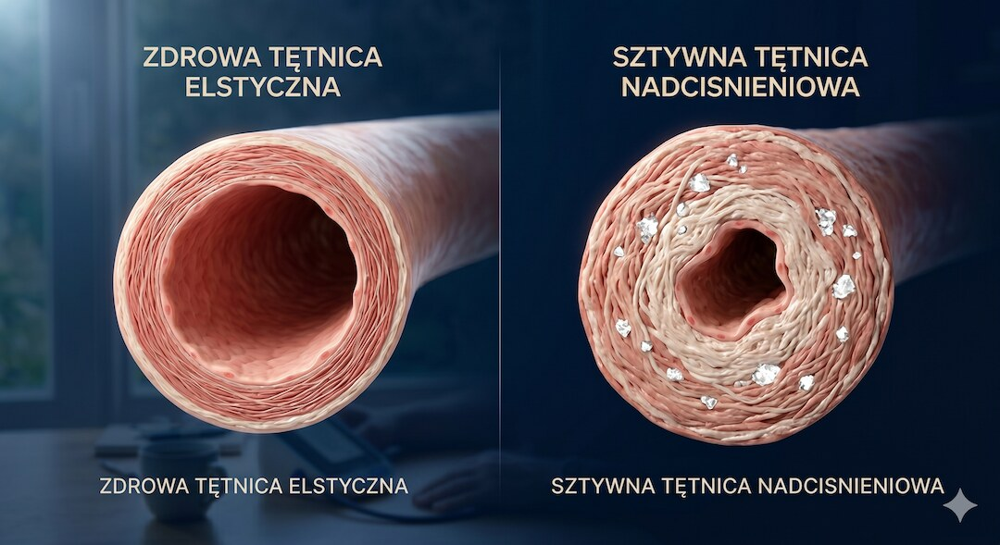
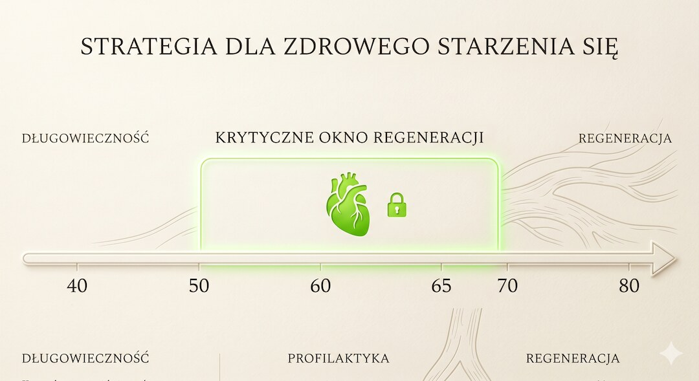
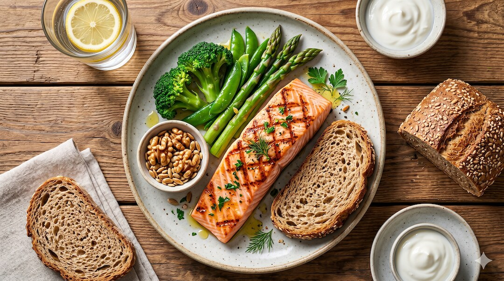
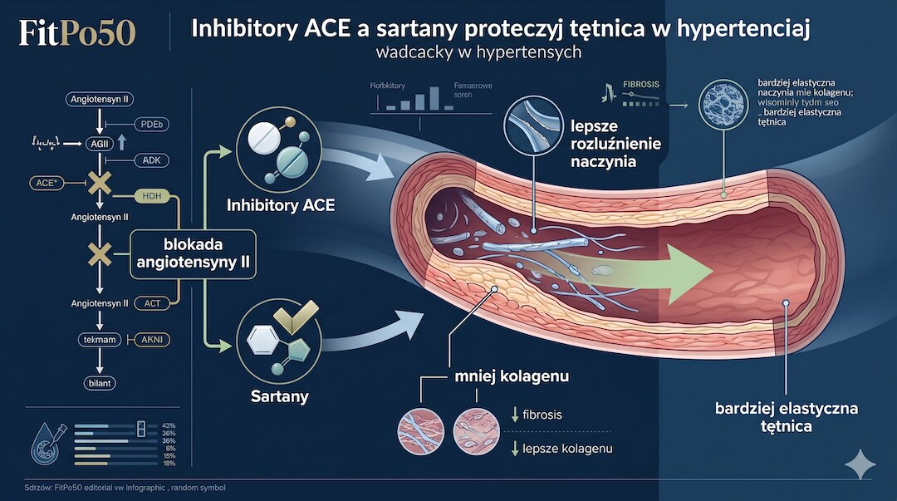
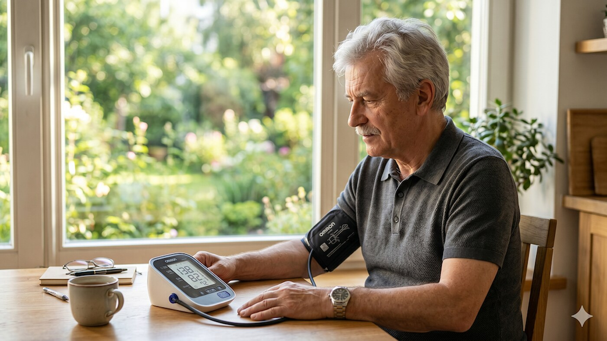

Sztywność tętnic to nie tylko efekt uboczny starzenia, ale aktywny sprawca nadciśnienia tętniczego po 50. roku życia. Gdy ściana naczynia gromadzi kolagen i traci elastynę, przestaje działać jak amortyzator, a zaczyna zachowywać się jak sztywna rura, co drastycznie podnosi ciśnienie skurczowe. Najnowsze badania kardiologiczne dowodzą jednak, że ten proces można wyhamować, a w odpowiednim oknie czasowym – częściowo odwrócić poprzez celowane interwencje w styl życia i farmakoterapię.
Szybka odpowiedź
Przy nadciśnieniu po 50 roku życia elastyczność naczyń można wspierać regularnym marszem lub interwałami, dietą DASH, ograniczeniem soli, domowymi pomiarami oraz leczeniem dobranym przez lekarza, zwłaszcza gdy wyniki często przekraczają 140/90 mmHg albo rośnie różnica między ciśnieniem skurczowym i rozkurczowym, bo wtedy tętnice są zwykle bardziej obciążone.
Kluczowe wnioski
- Sztywność tętnic (PWV) bezpośrednio napędza wzrost ciśnienia skurczowego po 50. roku życia i jest niezależnym czynnikiem ryzyka udaru.
- Trening interwałowy oraz dieta DASH to najskuteczniejsze metody niefarmakologiczne poprawiające elastyczność śródbłonka.
- Istnieje 'krytyczne okno' (zwykle między 50. a 65. rokiem życia), w którym zmiany w naczyniach są najbardziej podatne na odwrócenie.
- Leki z grupy inhibitorów ACE i sartanów nie tylko obniżają ciśnienie, ale aktywnie hamują włóknienie ścian naczyń.
Czym jest elastyczność tętnic i dlaczego spada po pięćdziesiątce?
Zdrowa tętnica to aktywna tkanka, która przy każdym uderzeniu serca rozszerza się, pochłaniając energię skurczu. Tę właściwość mierzy się wskaźnikiem prędkości fali tętna (PWV) . Prawidłowa wartość u dorosłego to poniżej 10 m/s; wynik powyżej 12 m/s oznacza zaawansowane stwardnienie naczyń . Z wiekiem sprężysta elastyna ulega degradacji, a jej miejsce zajmuje sztywny kolagen i złogi wapnia.
Proces ten przyspiesza przy nieleczonym nadciśnieniu. Wysokie ciśnienie mechanicznie uszkadza śródbłonek – warstwę komórek produkujących tlenek azotu (NO), niezbędny do rozkurczu naczyń. Powstaje niebezpieczne sprzężenie zwrotne: sztywne naczynia podnoszą ciśnienie, a wysokie ciśnienie jeszcze bardziej usztywnia naczynia. Warto sprawdzić profilaktycznie swoje parametry, wykonując regularne badania po 50. roku życia.
Według analizy Clinical Hypertension (2023), przewlekłe nadciśnienie aktywuje układ renina-angiotensyna-aldosteron (RAAS), co bezpośrednio nasila włóknienie ściany tętnic. Tętnica traci 'pamięć kształtu', co prowadzi do gwałtownych skoków ciśnienia, szczególnie niebezpiecznych dla mózgu i nerek.
- PWV (prędkość fali tętna) to złoty standard pomiaru sztywności naczyń.
- Utrata elastyny i nadmiar kolagenu to główna przyczyna stwardnienia tętnic.
- Tlenek azotu (NO) jest kluczem do elastyczności – jego produkcja spada wraz z uszkodzeniem śródbłonka.
- Stwardnienie dużych naczyń drastycznie zwiększa ryzyko zawału i niewydolności serca.

Krytyczne okno odwracalności: kiedy działanie ma największy sens?
Badania National Heart, Lung, and Blood Institute (NHLBI) wskazują na istnienie tzw. krytycznej strefy odwracalności . Jest to etap w procesie starzenia naczyń, w którym zmiany nie są jeszcze utrwalone przez masywną kalcyfikację (wapnienie). Dla większości osób ten optymalny czas na regenerację naczyń przypada między 50. a 65. rokiem życia . W tym okresie naczynia reagują na zmiany w stylu życia znacznie silniej niż w późniejszych dekadach.
Analiza Framingham Heart Study potwierdza, że utrzymanie elastycznych tętnic po 70-tce jest możliwe, ale wymaga konsekwencji w kontrolowaniu ciśnienia i masy ciała już dekady wcześniej. Kluczowe jest nie tylko leczenie, ale i profilaktyka, w tym odpowiednia dieta po 50. roku życia, która dostarcza niezbędnych antyoksydantów chroniących śródbłonek.
- Sztywność tętnic jest odwracalna, dopóki nie dojdzie do zaawansowanego wapnienia ścian.
- Największa podatność na regenerację naczyń występuje do 65. roku życia.
- Brak cukrzycy i niepalenie to fundamenty zachowania elastyczności tętnic na starość.
- Wczesne wdrożenie leków hamujących układ RAAS może cofnąć część zmian strukturalnych.

Który trening najskuteczniej 'zmiękcza' tętnice?
Aktywność fizyczna wymusza na naczyniach produkcję tlenku azotu (NO), co działa jak naturalny środek rozszerzający i uelastyczniający. Metaanaliza z 2025 roku opublikowana w Frontiers in Cardiovascular Medicine dowodzi, że trening interwałowy (INT) wykazuje najwyższą skuteczność w obniżaniu PWV. Naprzemienne okresy wyższego i niższego tętna 'trenują' ściany naczyń do szybkiej adaptacji, co przywraca im sprawność.
Dla osób początkujących optymalnym rozwiązaniem jest trening kombinowany: połączenie ćwiczeń siłowych z aerobowymi. Ważna jest kolejność – badania sugerują, że sesja siłowa zakończona aerobową (np. marszem) lepiej chroni przed sztywnieniem tętnic niż same ciężary. Szczegóły bezpiecznego startu znajdziesz w artykule trening 3x30 dla 50 plus.
- Trening interwałowy (np. zmienne tempo marszu) najsilniej poprawia PWV.
- Trening siłowy warto zawsze kończyć komponentą aerobową (np. 15 min marszu).
- Minimum 150 minut aktywności aerobowej tygodniowo to standard ochrony naczyń.
- Każde 10 mmHg redukcji ciśnienia skurczowego to ok. 35% mniejsze ryzyko udaru.
Dieta DASH i sól: jak jedzenie wpływa na ściany naczyń?
Dieta DASH ( Dietary Approaches to Stop Hypertension ) to model żywienia stworzony celowo do walki z nadciśnieniem. Jej siła tkwi w wysokiej podaży potasu i magnezu przy jednoczesnym ograniczeniu sodu. Sód (sól) powoduje zatrzymywanie wody i zwiększa napięcie ścian naczyń, co bezpośrednio je usztywnia. Ograniczenie soli do poniżej 2,3 g sodu dziennie (jedna niepełna łyżeczka) potrafi obniżyć PWV o 1,4 m/s w zaledwie 3 tygodnie.
Kluczowe produkty w diecie DASH to warzywa liściaste, strączki, orzechy i tłuste ryby morskie. Te ostatnie dostarczają kwasów omega-3, które hamują stan zapalny w ściankach tętnic. Warto pamiętać, że sen również ma wpływ na naczynia – o czym przeczytasz w tekście sen po 50. roku życia.
- Sól to główny wróg elastyczności naczyń – unikaj produktów przetworzonych.
- Potas (banany, pomidory, ziemniaki) kontrbalansuje szkodliwe działanie sodu.
- Kwasy omega-3 działają przeciwzapalnie na ściany tętnic, zapobiegając ich włóknieniu.
- Magnez wspiera rozkurcz mięśni gładkich w naczyniach krwionośnych.

Jak farmakoterapia chroni naczynia przy nadciśnieniu?
Współczesne leki na nadciśnienie nie tylko 'zbijają liczby' na ciśnieniomierzu, ale chronią narządy. Najsilniejszy wpływ na elastyczność naczyń mają blokery układu RAAS (inhibitory ACE i sartany). Hamują one działanie angiotensyny II – hormonu, który wymusza produkcję sztywnego kolagenu w ścianach tętnic. Dzięki nim naczynia stają się bardziej podatne, a ryzyko ich pęknięcia (udaru) maleje.
Statyny, choć kojarzone głównie z cholesterolem, również wykazują tzw. działanie pleiotropowe – poprawiają funkcję śródbłonka i stabilizują ścianę naczynia. Decyzja o leczeniu zawsze musi być poprzedzona dokładną diagnostyką, o której więcej dowiesz się w sekcji zdrowie.
- Inhibitory ACE (np. ramipril) i sartany to leki pierwszego wyboru przy sztywnych tętnicach.
- Statyny poprawiają elastyczność naczyń niezależnie od poziomu cholesterolu.
- Docelowe ciśnienie skurczowe wg wytycznych 2025 to poniżej 130 mmHg.
- Leki działają najskuteczniej w połączeniu z dietą DASH i regularnym ruchem.

Jak mierzyć ciśnienie w domu, żeby nie fałszować wyniku?
Domowy pomiar ma sens tylko wtedy, gdy jest powtarzalny. Usiądź na krześle, oprzyj plecy, połóż ramię na stole i odpocznij 5 minut przed pierwszym odczytem. Nie mierz ciśnienia po kawie, wysiłku ani stresującej rozmowie, bo wynik może być sztucznie zawyżony.
Najlepiej wykonać 2-3 pomiary rano i wieczorem przez kilka dni, a lekarzowi pokazać średnią, nie pojedynczy najwyższy wynik. Jeśli chcesz uporządkować całą profilaktykę, wróć też do przewodnika badania po 50. roku życia.
- Mierz ciśnienie po 5 minutach spokojnego siedzenia.
- Mankiet zakładaj na gołe ramię i trzymaj je na wysokości serca.
- Notuj średnią z kilku pomiarów, a nie pojedynczy skok.
- Przy regularnych wynikach powyżej 140/90 mmHg skonsultuj plan leczenia z lekarzem.

Najczęściej zadawane pytania
Czym dokładnie jest sztywność tętnic?
To stan, w którym ściany tętnic tracą zdolność do rozszerzania się i kurczenia. Wynika to z przewagi sztywnego kolagenu nad elastyczną elastyną oraz odkładania się wapnia. Sztywne tętnice nie amortyzują fali krwi wyrzucanej przez serce, co prowadzi do wzrostu ciśnienia skurczowego i uszkodzeń narządów wewnętrznych.
Czy elastyczność naczyń można zbadać samodzielnie w domu?
Nie bezpośrednio, ale domowym wskaźnikiem jest ciśnienie tętna (różnica między górnym a dolnym ciśnieniem). Jeśli różnica ta stale przekracza 60 mmHg, jest to silny sygnał sztywności naczyń. Profesjonalny pomiar (PWV) wykonuje lekarz za pomocą specjalistycznego sprzętu.
Czy dieta DASH jest trudna do utrzymania?
Wręcz przeciwnie – opiera się na ogólnodostępnych produktach. Kluczowe jest zastąpienie soli ziołami, wybieranie chudego nabiału i jedzenie dużej ilości warzyw. Badania pokazują, że efekty w postaci niższego ciśnienia pojawiają się już po 14 dniach stosowania tego modelu żywienia.
Jakie suplementy poprawiają stan naczyń?
Nauka potwierdza korzyści z przyjmowania kwasów omega-3 oraz magnezu. Warto również dbać o poziom witaminy D3 i K2-MK7 (która zapobiega odkładaniu wapnia w naczyniach). Pamiętaj jednak, że suplementy są tylko dodatkiem do diety DASH i ruchu, a nie ich zamiennikiem.
Pomiary domowe, ruch, dieta DASH i zasady bezpiecznego treningu znajdziesz w Centrum Nadciśnienia po 50-tce.
Źródła
- Arterial stiffness and hypertension, Clinical Hypertension, 2023
- Arterial stiffness and vascular aging: mechanisms and prevention, PMC, 2025
- Comparative effectiveness of exercise on arterial stiffness, Frontiers in Cardiovascular Medicine, 2025
- AHA/ACC Hypertension Clinical Practice Guideline, Circulation, 2025
- NHLBI: DASH Eating Plan
- WHO: Hypertension fact sheet, 2025
Uwaga: Artykuł ma charakter informacyjny i edukacyjny. Nie zastępuje konsultacji lekarskiej, diagnozy ani leczenia.